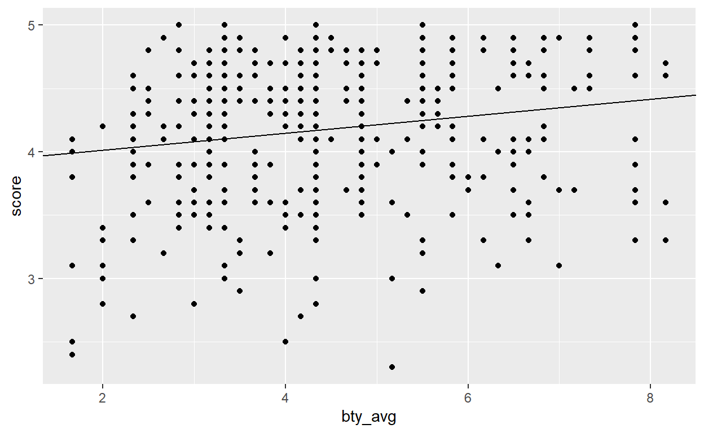

If you’ve never coded before (or even if you have), type print("Your Name") in the interactive R chunk below and run it by hitting crtl+Enter or cmd+Enter for MAC users.
In this tutorial, we consider an advanced technique for building a statistical model which can be used to explain phenomena, understand relationships, and predict outcomes. If you think about the inference portion of applied statistics so far, we’ve discussed how to conduct inference on a single numerical or categorical variable and then moved on to discuss inference on a numerical or categorical variable with an additional grouping variable. In the latter cases, the grouping variable needed to be a categorical variable (gender, automatic or manual transmission, type of diet eaten, etc.) – the questions we asked and answered were of the form, given observations which differ by the categorical variable \(X\), do they differ in another variable of interest \(Y\)?
Another way of phrasing this is that our inference applications seek to answer the question, “within our population of interest, is there an association between the variable \(X\) and the variable \(Y\)?”. If both variables \(X\) and \(Y\) are numerical, then we develop a new statistical inference technique called linear regression.
Let’s check in with a few short videos from our friends at OpenIntro.org to help develop the notion of linear regression for us.
Simple linear regression uses a single numerical feature (predictor variable) to predict a numerical response. Simple linear regression uses the form of a straight line \(y = mx + b\), where \(m\) denotes slope of the relationship and \(b\) denotes the intercept (the value of \(y\) if \(x\) is 0). With regression, we are fitting a straight line to data, where noise is present – that is, the line we fit is not expected to pass through all of the data points. The form for a simple regression model is \[\displaystyle{y = \beta_0 + \beta_1x + \varepsilon}\]
Notice that \(\beta_0\) is the intercept, \(\beta_1\) is the slope, and \(\varepsilon\) denotes the unexplained error (noise). We typically do not write \(\varepsilon\) as part of the model, since we assume that it is random noise with a mean of \(0\) and a constant standard deviation (\(\sigma\)) – in our earlier notation, we assume \(\varepsilon \sim N\left(\mu = 0, \sigma\right)\). Instead, we often write the regression model as \[\displaystyle{\mathbb{E}\left[y\right] = \beta_0 + \beta_1x}\]
We can use regression models to predict an expected average response (\(y\)) for a given value of the feature \(x\). Regression models are only as good as the data they are trained on. Typically we can feel comfortable using a regression model to interpolate predictions (make predictions within the range of observed feature values) but not for extrapolation – making predictions for values of the predictor variable outside of the range of its observed values.
Let’s see regression in action as we consider an application to understanding biases in course evaluations.
Many college courses conclude by giving students the opportunity to evaluate the course and the instructor anonymously. However, the use of these student evaluations as an indicator of course quality and teaching effectiveness is often criticized because these measures may reflect the influence of non-teaching related characteristics, such as the physical appearance of the instructor. The article titled, “Beauty in the classroom: instructors’ pulchritude and putative pedagogical productivity” (Hamermesh and Parker, 2005) found that instructors who are viewed to be better looking receive higher instructional ratings. (Daniel S. Hamermesh, Amy Parker, Beauty in the classroom: instructors pulchritude and putative pedagogical productivity, Economics of Education Review, Volume 24, Issue 4, August 2005, Pages 369-376, ISSN 0272-7757, 10.1016/j.econedurev.2004.07.013. http://www.sciencedirect.com/science/article/pii/S0272775704001165.)
In this lab we will analyze the data from this study in order to learn what goes into a positive professor evaluation.
The data were gathered from end of semester student evaluations for a large sample of professors from the University of Texas at Austin. In addition, six students rated the professors’ physical appearance. (This is a slightly modified version of the original data set that was released as part of the replication data for Data Analysis Using Regression and Multilevel/Hierarchical Models (Gelman and Hill, 2007).) The result is a data frame where each row contains a different course and columns represent variables about the courses and professors.
| variable | description |
|---|---|
score |
average professor evaluation score: (1) very unsatisfactory - (5) excellent. |
rank |
rank of professor: teaching, tenure track, tenured. |
ethnicity |
ethnicity of professor: not minority, minority. |
gender |
gender of professor: female, male. |
language |
language of school where professor received education: english or non-english. |
age |
age of professor. |
cls_perc_eval |
percent of students in class who completed evaluation. |
cls_did_eval |
number of students in class who completed evaluation. |
cls_students |
total number of students in class. |
cls_level |
class level: lower, upper. |
cls_profs |
number of professors teaching sections in course in sample: single, multiple. |
cls_credits |
number of credits of class: one credit (lab, PE, etc.), multi credit. |
bty_f1lower |
beauty rating of professor from lower level female: (1) lowest - (10) highest. |
bty_f1upper |
beauty rating of professor from upper level female: (1) lowest - (10) highest. |
bty_f2upper |
beauty rating of professor from second upper level female: (1) lowest - (10) highest. |
bty_m1lower |
beauty rating of professor from lower level male: (1) lowest - (10) highest. |
bty_m1upper |
beauty rating of professor from upper level male: (1) lowest - (10) highest. |
bty_m2upper |
beauty rating of professor from second upper level male: (1) lowest - (10) highest. |
bty_avg |
average beauty rating of professor. |
pic_outfit |
outfit of professor in picture: not formal, formal. |
pic_color |
color of professor’s picture: color, black & white. |
score variable in the evals data frame. Use your histogram to answer the questions that follow.
The fundamental phenomenon suggested by the Gelman and Hill study is that better looking teachers are evaluated more favorably. Use the code block below to create a scatterplot to see if this appears to be the case. The dataset is called evals. Put bty_avg along the horizontal axis and score along the vertical axis.
The code should follow the setup as shown below:
dataset%>%
ggplot(aes(x = _______, y = _______))+
geom_type()evals%>%
ggplot(aes(x = bty_avg, y = score))+
geom_point()Before we draw conclusions about the trend, compare the number of observations in the data frame with the approximate number of points on the scatterplot. Is anything awry?
Use the code block below to replot the scatterplot, but this time usegeom_jitter() instead of geom_point().
evals%>%
ggplot(aes(x = bty_avg, y = score))+
geom_jitter()m_bty to predict average professor score by average beauty rating. In R, we use the lm() function to build a linear regression model and then the summary() function to view it. The code is provided – you can just run it.
m_bty <- lm(score ~ bty_avg, data = evals)
summary(m_bty)We add a line to your plot by adding a layer with geom_abline() using the appropriate slope and intercept arguments.
evals%>%
ggplot(aes(x = bty_avg, y = score))+
geom_point()+
geom_abline(intercept = 3.88, slope = 0.067)